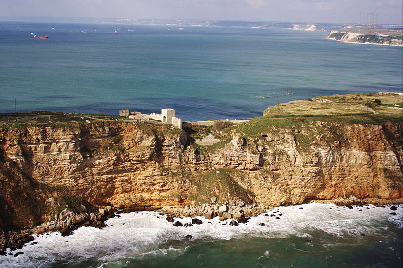
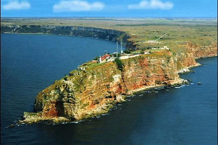
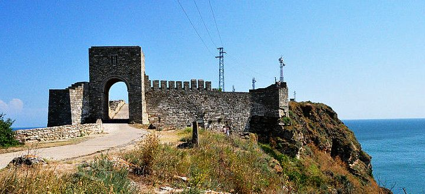
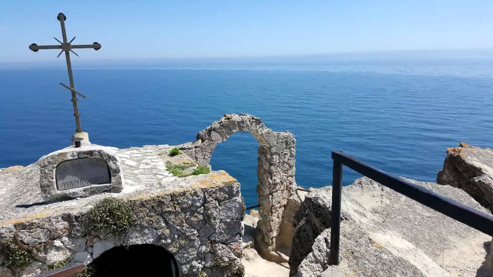
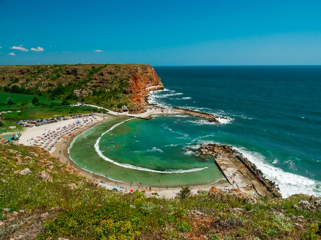
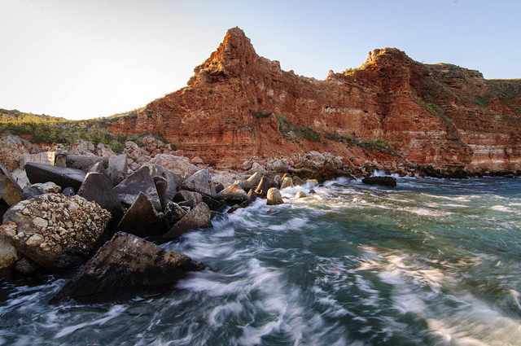

Kaliakra
 Kaliakra is a long and narrow headland in the north area of Bulgaria (60 kilometres northeast of Varna.
Is a nature reserve, where live dolphins and cormorants.
Kaliakra headland
 On the headland there is medieval fortress of Kaliakra.
Museum is working inside original walls and in a natural cave in the cliffs at Kaliakra. It exhibits items found on the spot there, at cape Kaliakra, Southern Dobruja.
Bolata beach
 Near Kaliakra there is beatifull beach, named Bolata. The place represents a small cove with a perfect semi-circular shape, featuring a beautiful sandy beach. All this is between a brick-colored high cliffs at the end of a rocky canyon. There is a very small river flowing into the sea.